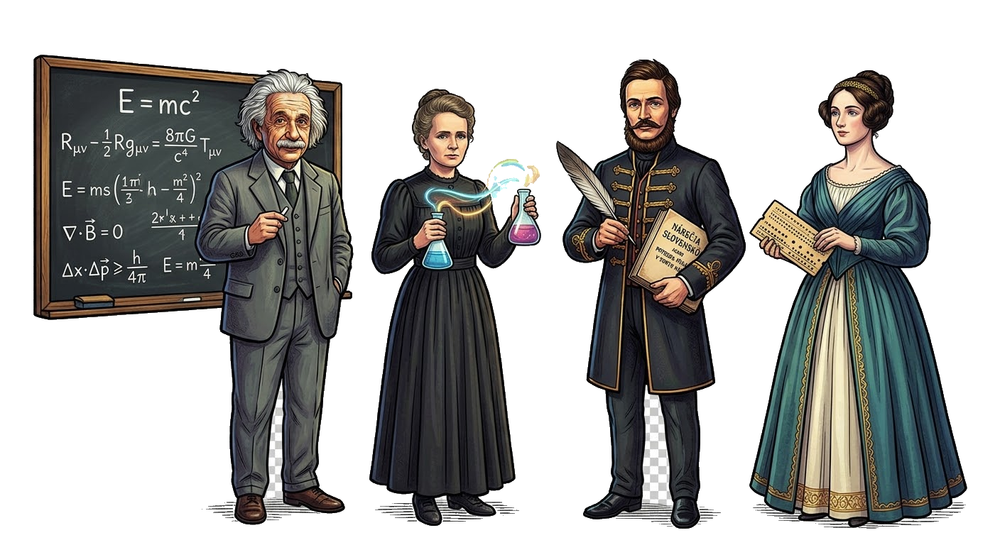

Pomocníci
Vyber si, čo chceš dnes precvičovať.
🧮
Sčítanie a odčítanie
Bodky, číselná os, desaťpole, korálky a číselné dvojice.
Matematika
do 20
💯
Sčítanie a odčítanie
Premostenie cez 10, desiatky a jednotky, tabuľka čísel, číselná os.
Matematika
do 100
Slovesník
Anglické slovesá — preklad, časovanie a precvičovanie.
Angličtina
slovesá
✏️
I vs Y
Tvrdé, mäkké a obojaké spoluhlásky. Vybrané slová a výnimky po L.
Slovenčina
i / y
🔢
Násobilka
Malá násobilka 1–10 s násobilkovou mriežkou, maticou bodiek a tabuľkou.
Matematika
1× – 10×